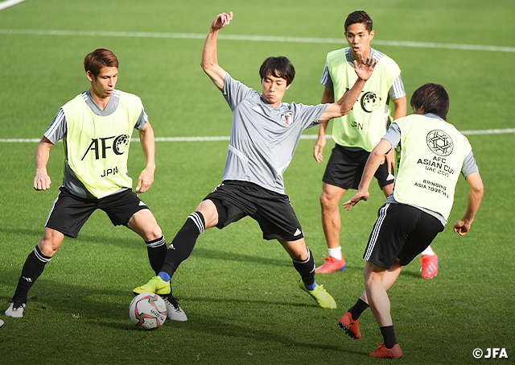
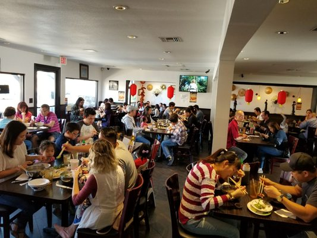

Tien Tran
My name is Tien Tran, I am currently a first year student at the University of California, Riverside.
I am currently majoring in Business Administration with a concentration in Finance.
I was born and raised in Vietnam until I moved to the United States at the age of thirteen.
Since moving to America, I have been living in a few cities. After 3 months of living in Boston, Massachusetts, my family decided to move to New Orleans, Lousianna for 2 months.
After that time period, we moved to San Diego, California where I completed my middle school career and as well my first year of high school.
At the end of my high school freshman year, I onced again moved with my family to the city of El Monte, California, where I finished the remaining years of high school.
At this moment, my family is still residing in El Monte. Living in different cities has really opened my perspective on life in the United States.
I learned that everyone has different ideas of what is right and what is wrong. Not everyone will share the same views on different topics. Thus, it is important to look at everything from different perspectives before coming up with solutions.
Throughout my career, I have acquired many important skills from confounding a debate club, waiting at pho restaurant and captaining a soccer team.
From confounding a club, I learned how to deal with a large amount of paperwork under pressure; how to speak in front of a large crowd and ensuring the well being of all members of the club.
As a waiter of a pho restaurant, I learned the skills of customer service such as adapting to each customers’ needs and wants and most importantly how to communicate well with the owners and staff members.
As a team captain, I learned to lead by examples through becoming the hardest worker on the field. By doing so, I gave my teammates the impression that if I can do it, then they can also do it. Captaining the soccer team further strengthening my communication and teamwork skills.
As a captain, I must act as a bridge between my teammates and the coaches, and the only way to do so is through clear communication.
Furthermore, I need clear communication to motivate my teammates to keep pushing through intense training sessions and matches.Teamwork skill is another skill that has been strengthened throughout the span of my career. For instance, by working as crew member at Pho Huynh, I learned to compromise and come up with creative solutions to resolve conflicts.
In addition to the skills listed above, I am also bilingual.
I am fluent in both Vietnamese and English. I can read, write and communicate clearly in both languages.
Currently, I am in the process of learning Spanish. I also have experience with common softwares such as Microsoft Words; Microsoft Excel; Microsoft Access and Powerpoint.
I am also a novice at coding. I have some experience with coding languages such as JAVA, C++ and Python.
Experience
Waiter
• Check with customers to ensure that they are enjoying their meals and take action to correct any problems
• Write patrons' food orders on order slips, memorize orders, or enter orders into computers for transmittal to kitchen staff
• Serve food or beverages to patrons, and prepare or serve specialty dishes at tables as required
Co-founder
• Ensure the well being of the club
• Set rules and standards and expectations
• Ensure the voice of each student is heard
Team Captain
• Lead team out to training sessions and matches
• Motivate each and every members of the team
• Serve as a link between team members and the coaches
Education
UC Riverside
Portfolio

